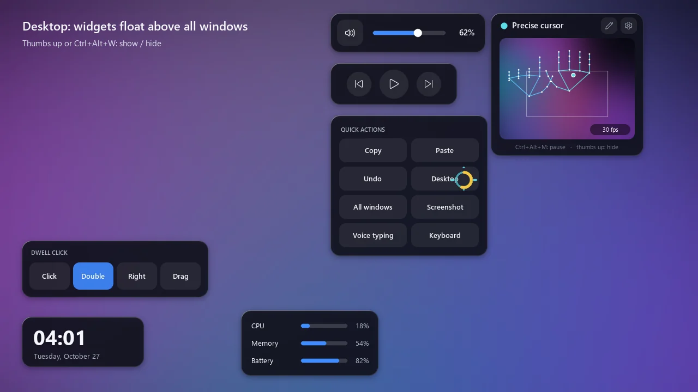

Widgets right on the screen
Volume, music, a clock, computer load and a panel with your own buttons float above all windows. Press them with a pinch, like any program.
- Thumbs up or Ctrl+Alt+W shows and hides them
- Your own buttons: key combinations, programs, websites, files
- They never take the focus: keys go to your program
